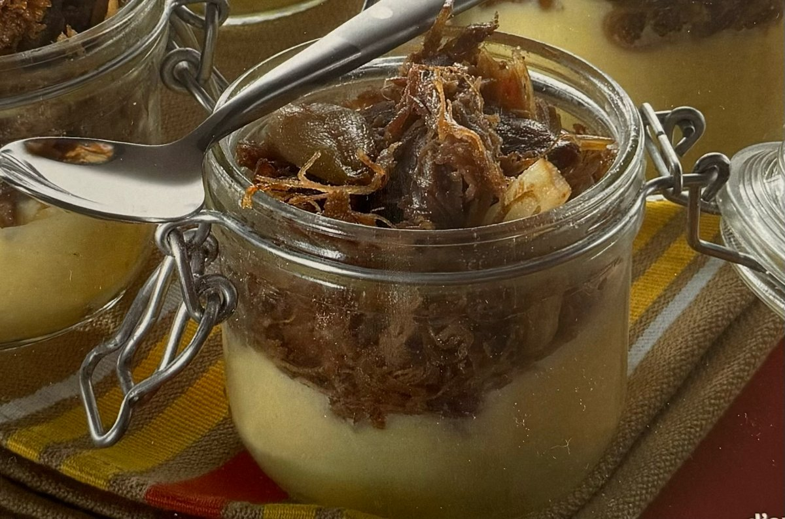

Parmentier de canard
Ingrédients
4×
- 10 pommes de terre
- 8 échalotes
- 80 g de beurre
- 1 c. à s. de sucre
- 2 c. à s. de vinaigre balsamique
- 30 cl de lait
- sel
- poivre
- 4 cuisses de canard

Préparation
Étape 1
Couper 10 pommes de terre en gros cubes et les cuire 20min à l’eau bouillante.
Étape 2
Pendant ce temps, éplucher 8 échalotes et les couper en deux. Les rissoler dans une partie des 80 g de beurre, puis les caraméliser environ 15min avec 1 c. à s. de sucre et 2 c. à s. de vinaigre balsamique.
Étape 3
Écraser les pommes de terre en purée avec le reste du beurre et 30 cl de lait. Ajouter du sel et du poivre.
Étape 4
Retirer la peau de 4 cuisses de canard, effilocher la viande et la mélanger aux échalotes.
Étape 5
Étaler la purée dans un plat beurré et la recouvrir du mélange de viande. Chauffer 10min au bain-marie dans le four à 180ºC.
Résumé
10 pommes de terre
Couper cuire
8 échalotes
80 g de beurre
1 c. à s. de sucre
2 c. à s. de vinaigre balsamique
rissoler caraméliser
30 cl de lait
sel
poivre
Écraser
4 cuisses de canard
effilocher
Chauffer bain-marie 180ºC